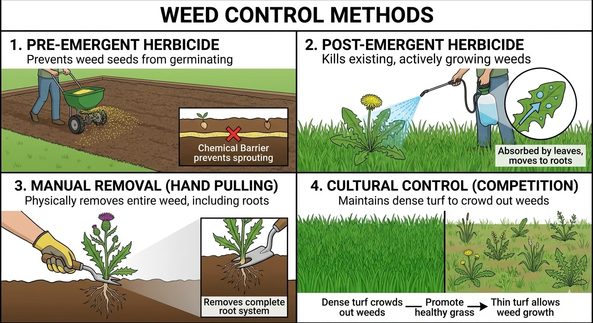
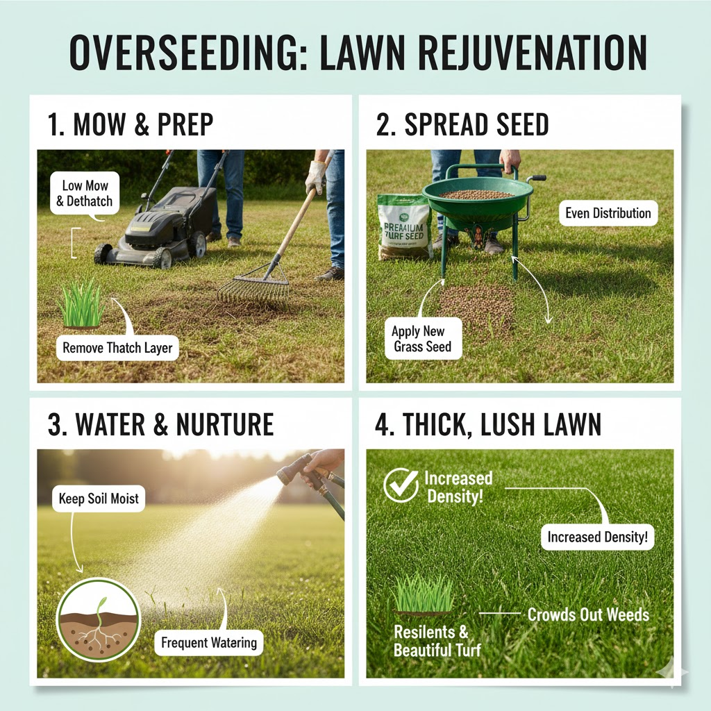

 Top ten weed removal methods Posted on June 15, 2024 #1: Start with Soil That's Actually Alive...
 How growing grass over your grass can net you more grass Posted on June 3, 2024 Yo dawg, I heard you like grass, so we put grass on your grass, so you can...